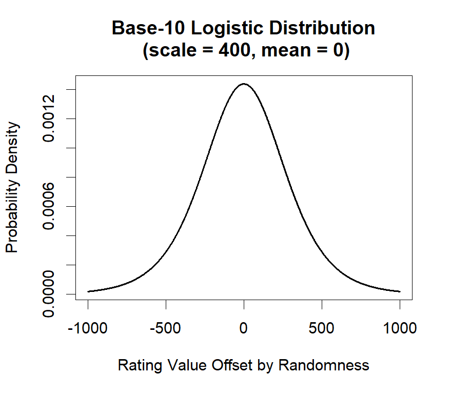

How Does the Rating System Work?
The rating system used by the ISF for the Slaps card game is an Elo rating system, similar to that used in chess. This system works by assigning each player a numerical rating that represents their skill level relative to other players of Slaps. Players earn a rating by playing refereed matches against other rated players.
New players start with a default rating of 1000 points. By winning matches, you gain points, and by losing matches, you lose points. The number of points gained or lost depends on the rating difference between you and your opponent: if you defeated a more skilled player, you gain more points than if you beat a less skilled player.
Players' ratings are updated automatically when match results are submitted to the official database, except for matches marked as friendlies. Players should agree before the match whether it is to be rated or a friendly. Rated matches should also have an official referee present to ensure fair play and resolution of disputes.
As players win and lose matches, their ratings will adjust to reflect their true skill level over time. All ratings are relative to the ratings of other players in the system. However, the rating is unlikely to reflect a player's skill accurately until they have played a sufficient number of rated matches. As such, ratings fluctuate more dramatically in the beginning and stabilise after they have played more games. Specifically, the maximum possible rating change for a match is ±32 points, but this decreases to a maximum of ±16 points after a player has completed 32 rated matches.
What is the Maths Behind the Rating System?
This section explains the mathematics behind the Elo rating system used by the ISF for Slaps. I have attempted to organise it with the simplest concepts first, with the more complex specifics later, so that readers can follow along from most basic to most advanced ideas in the rating system. I have also aimed to use plain language alongside the mathematical notation to make it as accessible as possible.
The Basics of the Rating System
After a rated match between two players A and B, each player's new rating is calculated using the following numbers:
- The player's old rating.
- The "K-Factor".
- The outcome of the match.
- The "expected" outcome of the match.
The K-Factor is a number that determines the maximum amount by which a player's rating can change after a match.
For new players ("rookies"), the K-Factor is 64, meaning that their rating can change by a maximum of 64 points after a match. After 5 rated games, the K-factor drops to 32. After a player has played 32 rated matches, their K-Factor decreases to 16, meaning that their rating can change by a maximum of 16 points after a match. After 64 games, the K-factor drops again to 8. The idea is that rating gets less and less volatile as a player's rating becomes more accurate in reflecting their true skill level. In addition, when anyone plays against a "rookie" opponent, their K-factor is halved for that match, to reflect the greater uncertainty in the rookie's rating.
The outcome of the match is represented as a number: 1 for a win, and 0 for a loss.
The "expected" outcome is a number between 0 and 1 that represents the probability of a player winning the match based on their comparative skill level. This is calculated using the difference in ratings between the two players.
New Rating = Old Rating + K × (Outcome − Expected Outcome)
Scenario 1
For example, if player A's rating is 1100 and player B's rating is 1000, the rating difference implies that player A should win 64% of the time on average, and player B should win 36% of the time, on average. In terms of mathematical probabilities, this means that the expected outcome for player A is 0.64 and for player B is 0.36. (See the "Statistics" section below for how these probabilities are calculated.) Note that the expected outcomes for both players add up to 1, as one player must win and the other must lose.
Say player A wins the match. The outcome from their perspective is 1: a win.
Therefore their new rating is calculated as follows:
With a K-value of 32: New RatingA = 1100 + 32 × (1 − 0.64) = 1112 (after rounding to the closest whole number).
From player B's perspective, the outcome is 0: a loss.
Therefore their new rating is calculated as follows:
New RatingB = 1000 + 32 × (0 − 0.36) = 988.
Scenario 2
If player B won the match instead, the calculations would be as follows:
New RatingA = 1100 + 32 × (0 − 0.64) = 1080.
New RatingB = 1000 + 32 × (1 − 0.36) = 1020.
Note the rating change of 20 for both players in this example, rather than 12, as in the previous example.
This is because player B winning is more unlikely than player A winning, given their ratings.
Therefore we learn more about their true skill levels from this unexpected outcome, and their ratings adjust more significantly to reflect this new information.
Scenario 3
If the players in the example above had both already played more than 32 rated matches, their K-Factor would be 16 instead of 32.
Therefore, if player A won, their new rating would be:
New RatingA = 1100 + 16 × (1 − 0.64) = 1106.
If player B won, their new rating would be:
New RatingB = 1000 + 16 × (1 − 0.36) = 1010.
Note how the rating changes are smaller in this example, as the K-Factor is smaller, reflecting the fact that the players' ratings
are more stable after having played more rated matches, and thus adjust less dramatically to reflect past results. The idea is that
these players' ratings are more accurate reflections of their skill levels, so less adjustment is needed after each match.
Scenario 4
Finally, a rather extreme example: say player A has a rating of 1400, and player B has a rating of 1000. The expected outcome in this scenario for player A is approximately 0.91, and for player B is approximately 0.09. I.e., player A is expected to win 91% of the time, and player B is expected to win 9% of the time.
If player A wins, their new rating is:
New RatingA = 1400 + 32 × (1 − 0.91) = 1403.
If player B wins, their new rating is:
New RatingB = 1000 + 32 × (1 − 0.09) = 1029.
Note how player A's rating only increases by 3 points after winning, as this was the expected outcome, given the large difference
in their skill level according to their ratings, while reflect past results.
If player B wins, however, their rating increases by 29 points, as this was a very unexpected outcome. This shows how the Elo rating system rewards players more for winning against stronger opponents, and penalises players less for losing against stronger opponents.
Statistics Behind the Expected Outcome Calculation
The expected outcome aspect of the calculation is the most mathematically complex part of the Elo rating system. The idea is that ratings can be used to represent the statistical likelihood of a player winning against another player. A player's likelihood of winning any given match is product of their skill level relative to their opponent's skill level and an element of randomness. This means that even a less skilled player has a chance of winning against a more skilled player, due to the inherent unpredictability of any competitive game.
The skill element is of course represented by the players' ratings. However, we must find a way to model the randomness element mathematically. This randomness can come from mistakes unrepresentative of the player's skill level, luck in the way the cards fall (for example convenient sequences of cards), and any other unpredictable factors that can influence the outcome of a match.
To model this randomness, we use a probability distribution. A probability distribution is a mathematical function that describes the likelihood of different outcomes occurring in a random process. In choosing a distribution, we make an assumption about the nature of the randomness in Slaps matches. Are all potential outcomes equally likely, or are some outcomes more likely than others?
The cards in Slaps are likely to fall in a way that benefits one player more than another, due to the inherent randomness of shuffling and dealing cards. If a player gets exceptionally lucky, the randomness might be enough to allow them to win against a significantly more skilled opponent. For example, they might be able to overcome a 400-point rating difference. Alternatively, a more skilled player could be making uncharacteristic mistakes, allowing a lower rated player to beat them. However, these scenarios, where randomness plays a significant role, are rare and unpredictable.
Randomness is more likely to play a minor role in determining the outcome of a match, with skill being the dominant factor. In most games, the randomness in the way the cards fall or variance in player form is much more likely to influence the outcome by a small margin, for example the equivalent of 20 rating points.
This leads to our choice of distribution For example, a uniform distribution assumes that all outcomes are equally likely. In this context, this would mean that the randomness in Slaps matches is such that any player has an equal chance of winning, regardless of their skill level. A 400-point advantage would be equally likely to be offset by randomness as a 20-point advantage. This does not align with our understanding of the game, where skill is the dominant factor.
Instead, we use a logistic distribution to model the randomness in Slaps matches. A logistic distribution assumes that outcomes closer to the mean are more likely, while extreme outcomes are less likely. In this case, the mean is a game where the randomness has no effect on the outcome, and the extreme outcomes are games where randomness significantly influences the result.
We set the mean as 0 in our logistic distribution, reflecting the idea that on average, randomness does not favour either player. However, to mathematically describe a distribution, we also need to define its spread, which determines how much variance there is around the mean. Logistic distributions in particular are also characterized by their shape parameter, which affects the steepness of the distribution curve. These points are unimportant except to say that the shape parameter is set to a value that means that a 400-point rating difference corresponds to a 91% expected win probability for the higher rated player.
This graph illustrates this concept: this is the distribution that we assume randomness in Slaps matches draws from. Most of the time, there is a small amount of randomness (values close to 0 on the x-axis), but occasionally there is a large amount of randomness (values far from 0 on the x-axis). This can, in rare scenarios, offset a major skill (rating) difference between two players, allowing a lower rated player to win against a significantly higher rated opponent. The distribution is symmetrical because we assume that randomness is equally likely to benefit either player.
Mathematically speaking, this means that the expected score for each player is calculated using a formula that incorporates both the rating difference between the two players (RA and RB for players A and B respectively) and the randomness inherent in the game, modelled by the logistic distribution. The expected score for player A (EA) is given by the formula: \[E_A = \frac{1}{1 + 10^{(R_B - R_A)/400}}\] Similarly, the expected score for player B (EB) is given by: \[E_B = \frac{1}{1 + 10^{(R_A - R_B)/400}}\]
So, once we take into account both skill level and randomness, we arrive at the following expected outcomes according to some example rating differences:
±0 points: 50% expected win probability for both players
±100 points: approximately 64% expected win probability for the higher rated player
±200 points: approximately 76% expected win probability for the higher rated player
±300 points: approximately 85% expected win probability for the higher rated player
±400 points: approximately 91% expected win probability for the higher rated player
These expected outcomes are then used in the rating update formula described earlier to adjust players' ratings after each match.
Formulas
In summary, the formulas used in the Elo rating system for Slaps are as follows:
Expected Score for Player A: \[E_A = \frac{1}{1 + 10^{(R_B - R_A)/400}}\]
Expected Score for Player B: \[E_B = \frac{1}{1 + 10^{(R_A - R_B)/400}}\]
New Rating for Player A: \[R'_A = R_A + K × (S_A − E_A)\]
New Rating for Player B: \[R'_B = R_B + K × (S_B − E_B)\]
Where:
\(R_A\) and \(R_B\) are the old ratings of players A and B respectively.
\(R'_A\) and \(R'_B\) are the new ratings of players A and B respectively.
\(K\) is the K-Factor (32 for new players, 16 for players with more than 32 rated matches).
\(S_A\) and \(S_B\) are the actual scores of players A and B respectively (1 for a win, 0 for a loss).
\(E_A\) and \(E_B\) are the expected scores of players A and B respectively, calculated using the expected score formulas above.
In addition, based on the assumption that:
Result = skill difference + randomness,
where skill difference = (RA - RB) and randomness = ε
and ε ~ logistic(0, s), where \[s=400/ln(10)\]